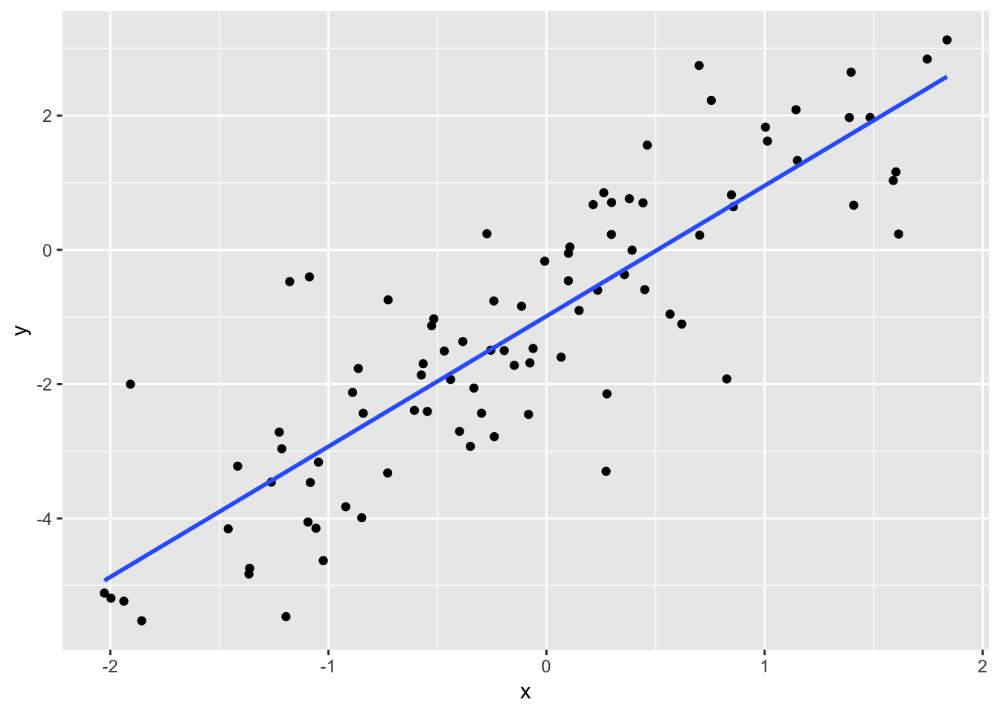
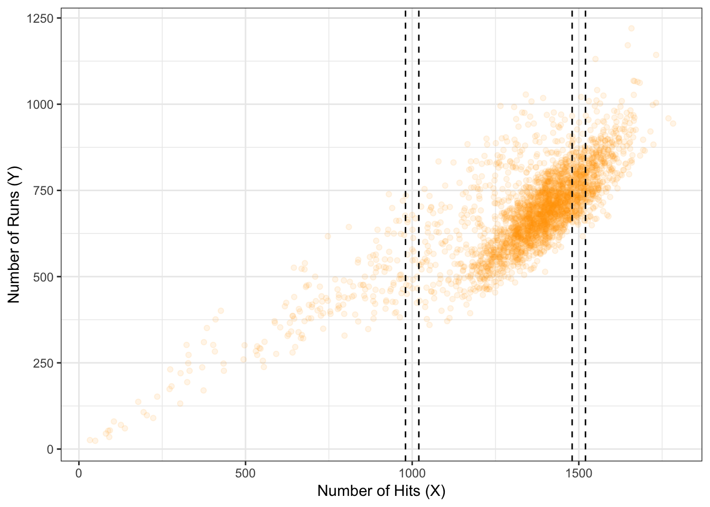
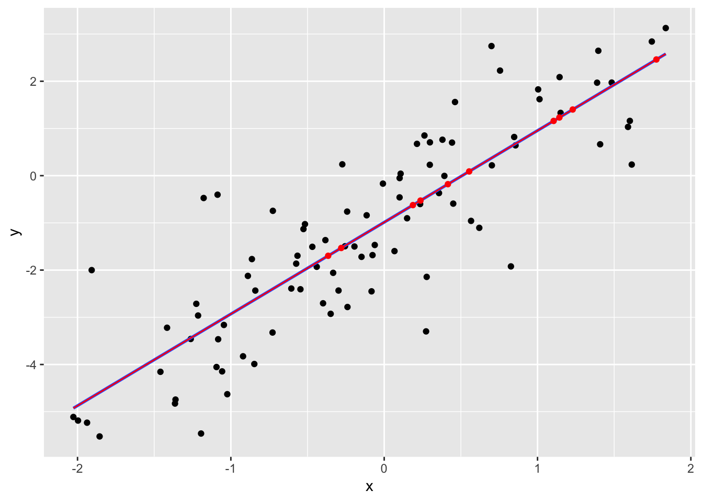
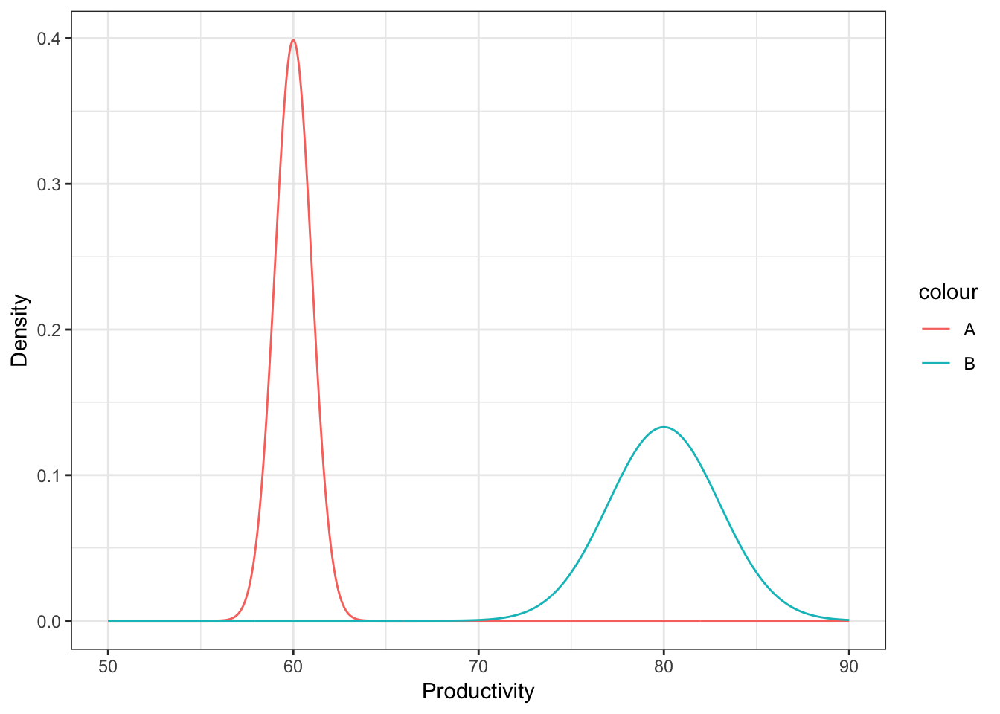

Chapter 24 DSCI 562 Tutorial: Missing Data
Caution: in a highly developmental stage! See Section 1.1.
Let’s take a closer look at mean imputation vs. multiple imputation.
24.1 Mean Imputation
Let’s consider a simple linear regression example, with one explanatory variable. We’ll generate 100 data points, and make 10 of the response values missing.
set.seed(13)
x <- rnorm(100)
y <- -1 + 2 * x + rnorm(100)
y[1:10] <- NAHere are the data:
x## [1] 0.55432694 -0.28027194 1.77516337 0.18732012 1.14252615
## [6] 0.41552613 1.22950656 0.23667967 -0.36538277 1.10514427
## [11] -1.09359397 0.46187091 -1.36098453 -1.85602715 -0.43985541
## [16] -0.19394690 1.39643151 0.10066325 -0.11443881 0.70222523
## [21] 0.26254267 1.83616330 0.35740242 -1.04541013 0.62018413
## [26] 0.14935453 -1.45931685 -2.02704380 -1.05695776 -0.72814372
## [31] -0.00821067 0.84779738 -0.38349150 -0.52651151 -0.27322596
## [36] -0.60574161 -0.33286731 -0.24153755 -0.86277540 -0.84697075
## [41] 0.10034035 1.59003353 0.56649488 1.61447949 -0.46865016
## [46] -0.72610140 -1.02333900 -1.93781553 0.27714729 1.40835367
## [51] 0.27312919 0.75552507 -0.34901841 -0.54619076 0.23436199
## [56] -0.29782822 -0.84047613 0.82651036 1.48369123 0.69967564
## [61] -1.26157415 0.29827174 -0.14780711 -0.88892233 1.01306586
## [66] -0.92052508 -0.57389450 1.15036548 1.14382456 -0.23944276
## [71] -1.08680215 -0.06144699 -0.51669734 -1.90767369 0.10715648
## [76] -1.17737519 1.74542691 -0.39869853 0.44243942 0.45027946
## [81] -0.07606216 0.29751322 -1.19435471 -1.99687548 1.38851305
## [86] -0.08248357 0.39251449 -1.08276971 1.60212039 1.00406897
## [91] 0.37989570 -0.56550536 -1.21377810 -1.36430159 -1.41613295
## [96] -0.25557803 -1.22542595 0.21383426 0.06722356 0.85663511y## [1] NA NA NA NA NA
## [6] NA NA NA NA NA
## [11] -4.053704654 1.559887706 -4.743071625 -5.523818780 -1.930473677
## [16] -1.500485206 2.645513317 -0.051326812 -0.839409352 0.218430884
## [21] 0.850566209 3.126514212 -0.368543711 -3.162228622 -1.105128040
## [26] -0.902167648 -4.154972172 -5.111932100 -4.145855361 -3.322836591
## [31] -0.168810384 0.819016643 -1.365461091 -1.130697319 0.240141538
## [36] -2.390779077 -2.058218000 -0.761012345 -1.767026541 -3.989408584
## [41] -0.459957593 1.032304370 -0.957928133 0.235330176 -1.507042163
## [46] -0.745023600 -4.628929629 -5.232634575 -2.144358973 0.664736992
## [51] -3.298505466 2.225627728 -2.926853644 -2.406454479 -0.601188334
## [56] -2.433257875 -2.434091710 -1.922107514 1.971684397 2.745313865
## [61] -3.459211491 0.705772270 -1.719688562 -2.123423177 1.619808115
## [66] -3.826059870 -1.864032144 1.330204157 2.087342480 -2.782158129
## [71] -0.403227138 -1.468562228 -1.026899366 -2.000743246 0.042009453
## [76] -0.473418979 2.841051621 -2.703355211 0.700489075 -0.592450346
## [81] -1.683073694 0.229914942 -5.462264420 -5.187776409 1.969480413
## [86] -2.450285233 -0.005289845 -3.465216049 1.160366954 1.827202816
## [91] 0.761346358 -1.696197511 -2.962489498 -4.827255075 -3.221340010
## [96] -1.494866659 -2.714534509 0.673879626 -1.598181064 0.641959448Here’s the scatterplot with the missing data removed, and the corresponding linear regression fit:
p <- qplot(x, y) + geom_smooth(method="lm", se=FALSE)
p## Warning: Removed 10 rows containing non-finite values (stat_smooth).## Warning: Removed 10 rows containing missing values (geom_point).
The mean imputation method replaces the NA’s with an estimate for the mean of \(Y\). The simplest case is to use the sample average of the response. The imputed observations are shown in red, and the resulting lm fit is also in red.
ybar <- mean(y, na.rm=TRUE)
datrm <- na.omit(data.frame(x=x, y=y))
datimp <- data.frame(x=x[1:10], y=ybar)
p + geom_point(data=datimp, colour="red") +
geom_smooth(data=rbind(datrm, datimp), method="lm", se=FALSE, colour="red")## Warning: Removed 10 rows containing non-finite values (stat_smooth).## Warning: Removed 10 rows containing missing values (geom_point).
Notice that the new regression line is flatter.
Another mean-imputation method is to replace the NA’s with an alternative mean estimate: the regression predictions.
fit2 <- lm(y ~ x, na.action=na.omit)
yhat <- predict(fit2, newdata=data.frame(x=x[1:10]))
datimp2 <- data.frame(x=x[1:10], y=yhat)
p + geom_point(data=datimp2, colour="red") +
geom_smooth(data=rbind(datrm, datimp2), method="lm", se=FALSE, colour="red", size=0.5)## Warning: Removed 10 rows containing non-finite values (stat_smooth).## Warning: Removed 10 rows containing missing values (geom_point).
The regression line has not changed. This method seems smarter, but it still has consequences, since the imputed data suggests that the dataset is bound closer to the regression line than reality. So the residual variance is biased to be smaller.
These are both mean imputation methods. So, in your Lab 2 assignment, you can use any mean imputation method – your explanation of the comparison will just depend on what you choose.
24.2 Multiple Imputation
Recall that multiple imputation is a technique for handling missing data. It replaces the missing data with many plausible values, to obtain mutliple data sets. An analysis is done on each data set, and the results are combined.
A very powerful R package to assist with multiple imputation is the mice package. Some key things that it does:
- Displays patterns in missing data.
- Imputes data to obtain multiple data sets.
- Pools multiple analyses into one.
We’ll look at the airquality dataset in R.
library(mice)
head(airquality)## Ozone Solar.R Wind Temp Month Day
## 1 41 190 7.4 67 5 1
## 2 36 118 8.0 72 5 2
## 3 12 149 12.6 74 5 3
## 4 18 313 11.5 62 5 4
## 5 NA NA 14.3 56 5 5
## 6 28 NA 14.9 66 5 624.2.1 Patterns
Where are the NAs?
md.pattern(airquality)
## Wind Temp Month Day Solar.R Ozone
## 111 1 1 1 1 1 1 0
## 35 1 1 1 1 1 0 1
## 5 1 1 1 1 0 1 1
## 2 1 1 1 1 0 0 2
## 0 0 0 0 7 37 44A “1” indicates that an observation is present, and a “0” indicates absense. The periphery of the matrix are counts: to the right, are the number of NAs in the row; at the bottom, are the number of NAs in each column; to the left, are the number of observations having a missing data pattern indicated in the matrix.
So we can see that there are 7 missing Solar Radiation observations, and 37 missing Ozone observations. We could check that in another way as follows:
sum(is.na(airquality$Solar.R))## [1] 7sum(is.na(airquality$Ozone))## [1] 3724.2.2 Multiple Imputation
There are many methods of doing an imputation. But generally, they use other columns in the data set to do prediction on the missing data.
The function to do this is mice. Let’s impute 50 data sets using the “Predictive Mean Matching” method.
(dats <- mice(airquality, m=50, method="pmm", seed=123, printFlag=FALSE))## Class: mids
## Number of multiple imputations: 50
## Imputation methods:
## Ozone Solar.R Wind Temp Month Day
## "pmm" "pmm" "" "" "" ""
## PredictorMatrix:
## Ozone Solar.R Wind Temp Month Day
## Ozone 0 1 1 1 1 1
## Solar.R 1 0 1 1 1 1
## Wind 1 1 0 1 1 1
## Temp 1 1 1 0 1 1
## Month 1 1 1 1 0 1
## Day 1 1 1 1 1 0The m argument is the number of imputed datasets. method is the method (you can check out the other methods in the “Details” part of the documentation of mice). Because there’s a random component to the imputation, seed indicates the seed to initiate the random number generator – useful for reproducibility! Finally, I didn’t want mice to be verbose with its output, so I silenced it with printFlag=FALSE.
dats isn’t just a list of 50 datasets. It has more information bundled in it. The info is bundled in an object of type “mids”:
class(dats)## [1] "mids"But we can extract the data sets. Want to see the fourth imputed data set? Here it is:
head(complete(dats, 4))## Ozone Solar.R Wind Temp Month Day
## 1 41 190 7.4 67 5 1
## 2 36 118 8.0 72 5 2
## 3 12 149 12.6 74 5 3
## 4 18 313 11.5 62 5 4
## 5 8 127 14.3 56 5 5
## 6 28 314 14.9 66 5 624.2.3 Pooling
The mice package allows you to pool many types of regression analyses. Let’s try a simple linear regression to predict Ozone from Solar.R, Wind, and Temp. You’ll need to use base R’s with function.
fits <- with(dats, lm(Ozone ~ Solar.R + Wind + Temp))If you were to print fits to the screen, it would look like a list of 50 regression fits – one for each of the imputed data sets. But it’s not. Take a look:
names(fits)## [1] "call" "call1" "nmis" "analyses"Like dats, fits has more info in it. But it does have the 50 regression fits. And they can be pooled using the pool function:
(fit <- pool(fits))## Class: mipo m = 50
## estimate ubar b t dfcom
## (Intercept) -61.90301171 3.811506e+02 1.307680e+02 5.145339e+02 149
## Solar.R 0.05910719 4.108874e-04 1.037848e-04 5.167480e-04 149
## Wind -3.11988214 3.146474e-01 1.181007e-01 4.351101e-01 149
## Temp 1.59210031 4.685921e-02 1.183499e-02 5.893090e-02 149
## df riv lambda fmi
## (Intercept) 94.76599 0.3499492 0.2592314 0.2743853
## Solar.R 106.27508 0.2576387 0.2048591 0.2194121
## Wind 91.16698 0.3828499 0.2768557 0.2922145
## Temp 106.27817 0.2576162 0.2048448 0.2193977summary(fit)## estimate std.error statistic df p.value
## (Intercept) -61.90301171 22.68334009 -2.729008 94.76599 7.435912e-03
## Solar.R 0.05910719 0.02273209 2.600165 106.27508 1.064336e-02
## Wind -3.11988214 0.65962874 -4.729755 91.16698 6.945757e-06
## Temp 1.59210031 0.24275688 6.558415 106.27817 2.021784e-09And there are the results of the pooled fit. This pooling works for more than just lm!